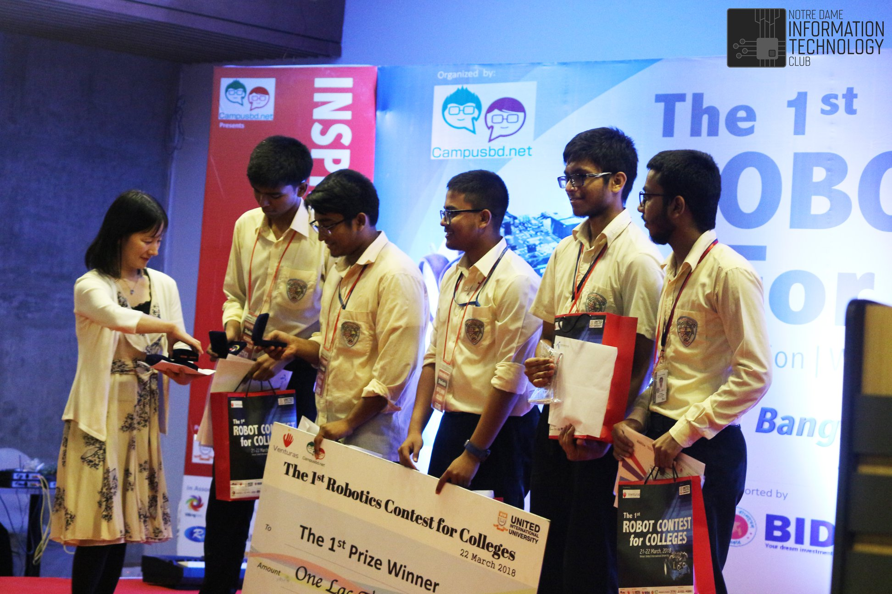

Our Certificates & Online Programs For 2021
Certificates-giving ceremony of our collage was held on 2nd April.We are very sorry due to covid pandemic it was not possible for us to arrage this program physically.But we are over the moon for this excelent results of our beloved students.We all are egarly waiting for your presence in our beautiful college campus.
Current Student-Teacher-Employee
Number of Science Students
5000
Number of Commerse students
2500
Number of Arts students
1200
Teachers
100
Employee
150
Leave a comment